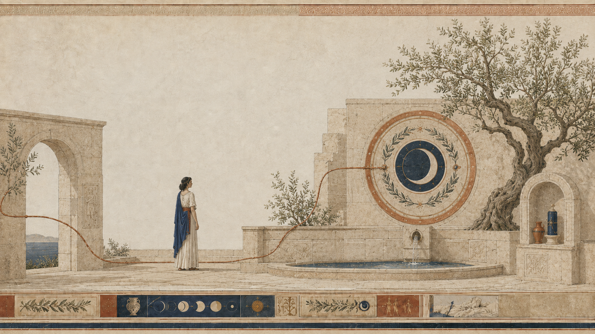
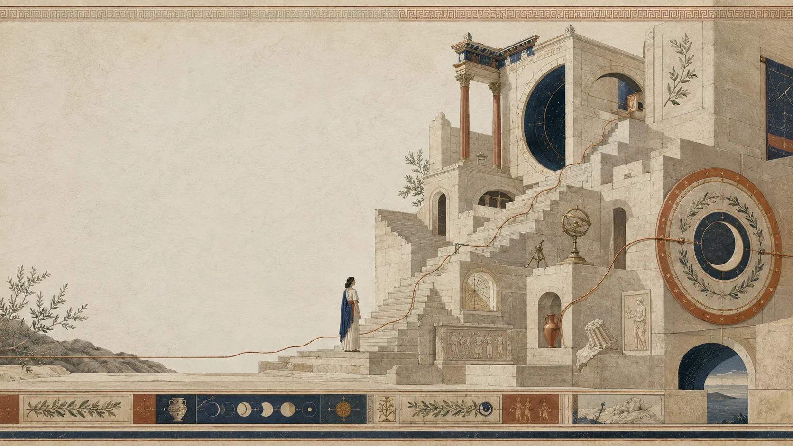
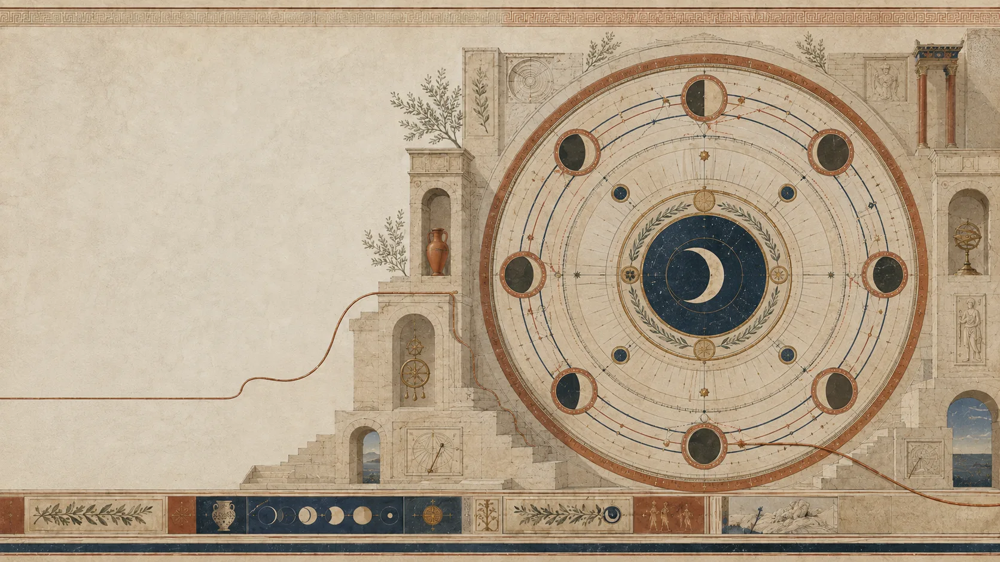
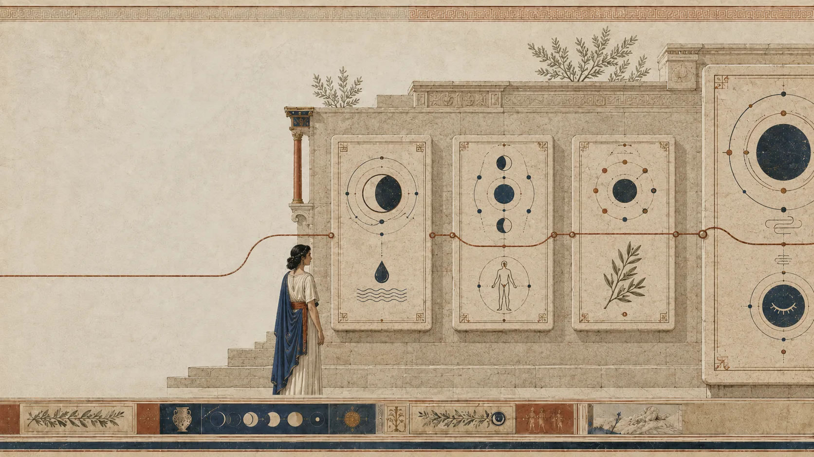
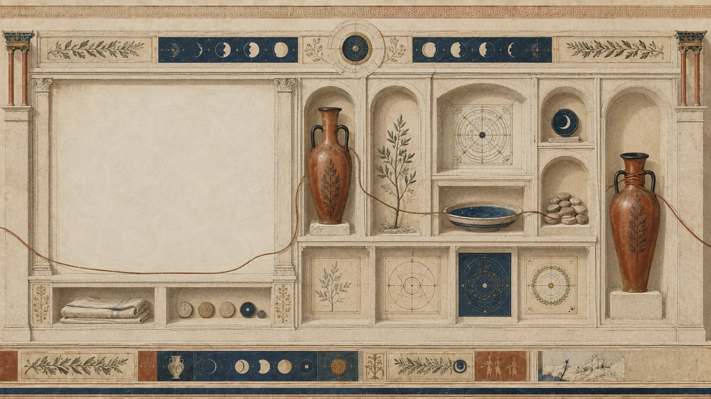
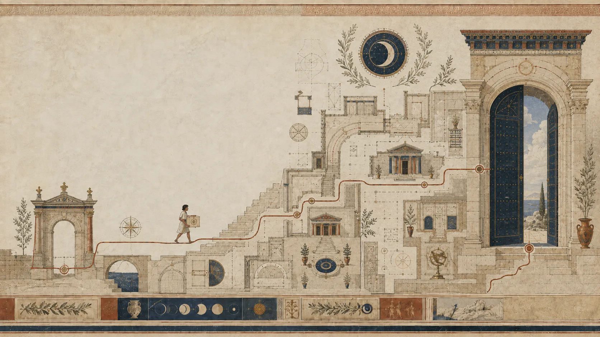

LOUSA MOON
Know your rhythm.
Care for it.
A thoughtful way to follow your cycle, notice personal patterns and understand how you feel throughout the month.

LOUSA MOON
A thoughtful way to follow your cycle, notice personal patterns and understand how you feel throughout the month.
YOUR CYCLE
Follow your cycle over time and see how individual days begin to form a clearer pattern.
PERSONAL INSIGHT
Mood, sleep, symptoms and everyday notes become part of one personal record.
WELLNESS
Record how you feel and return to the patterns that matter to you.
THE LOUSA BOX
A considered collection of wellness essentials brought together as part of the LOUSA experience.
FROM LOUSA TO YOU
A considered experience from selection to delivery.
BEGIN YOUR RHYTHM
Track. Notice. Understand. Care.
LOUSA MOON · THE LUNAR CODEX





DESIGNED TO NOTICE WITH YOU
Cycle tracking, wellness notes and thoughtful care — held together without turning your body into a dashboard.